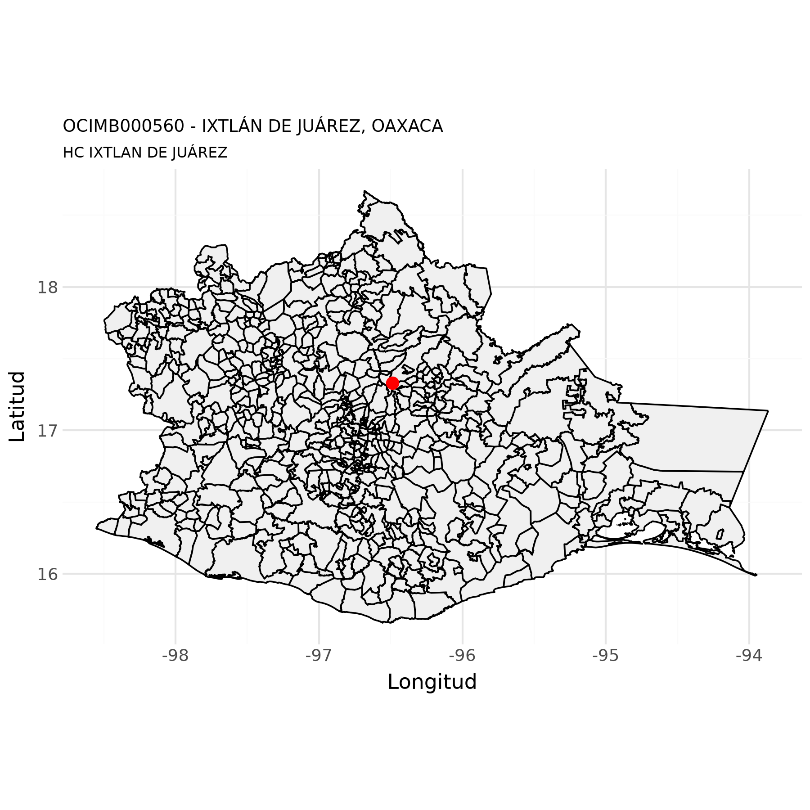
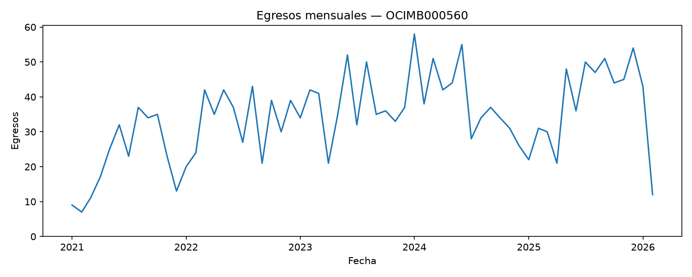
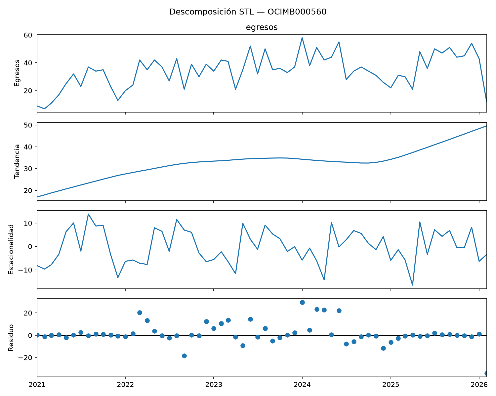
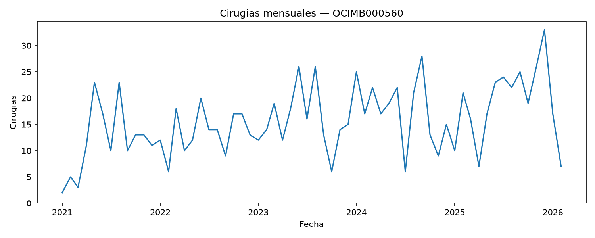
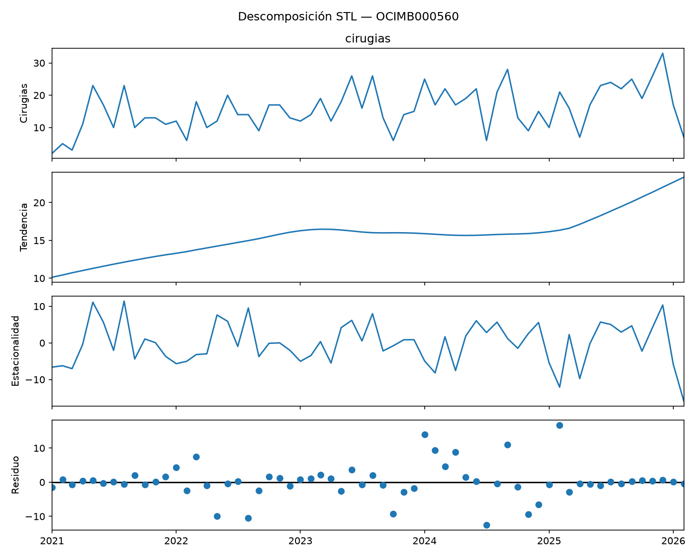
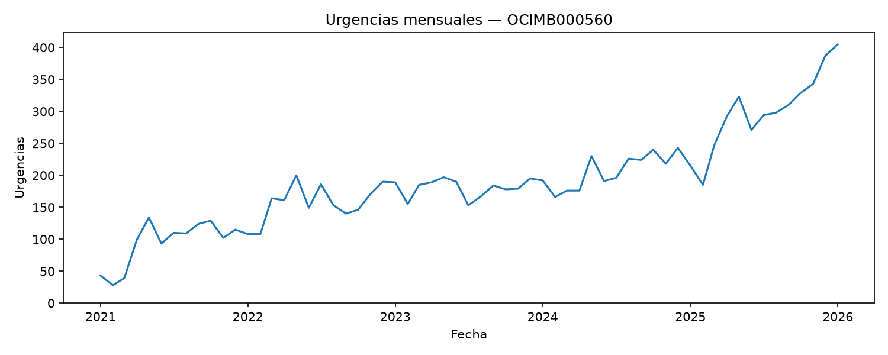
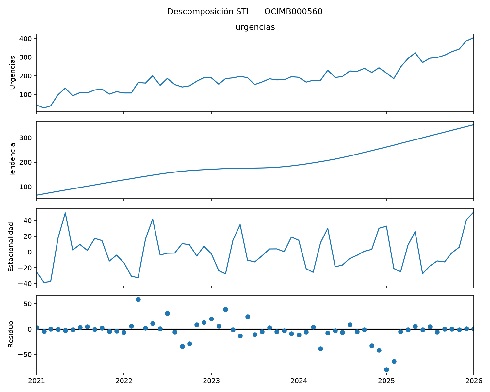

Datos de unidades de salud del IMSS Bienestar
HC IXTLAN DE JUÁREZ - OCIMB000560
5 de octubre de 2026
Luis
M. González

Datos generales
Con base en (Secretaría de Salud - DGIS, 23 de septiembre de 2026)
| Nombre de la unidad: | HC IXTLAN DE JUÁREZ |
| CLUES: | OCIMB000560 |
| Nivel de atención: | SEGUNDO NIVEL |
| Tipología: | HOSPITAL INTEGRAL (COMUNITARIO) |
| Subtipología: | NO ESPECIFICADO |
| Tipo de establecimiento: | HOSPITALIZACIÓN |
| Estrato: | URBANO |
| Estatus: | FUERA DE OPERACIÓN |
| Región: | SURESTE |
| Entidad: | OAXACA |
| Municipio: | IXTLÁN DE JUÁREZ |
| Localidad: | IXTLÁN DE JUÁREZ |
| Coordenadas: | 17.331535, -96.488085 |
| Domicilio: | CALLE VENUSTIANO CARRANZA No. SIN NÚMERO |
| PUEBLO IXTLAN DE JUAREZ | |
| IXTLÁN DE JUÁREZ, OAX | |
| CP 68725 | |
| Fecha de construcción: | 1990-08-01 |
| Fecha de inicio de operación: | 1990-08-01 |
| Propiedad del inmueble: | PROPIO |
| Último movimiento: | BAJA |
| Fecha del último movimiento: | 2026-02-03 |
| Motivo de baja: | SE SUSTITUYE |
| Fecha efectiva de baja: | 2025-03-21 |
Mapa

Egresos hospitalarios
Con base en (Secretaría de Salud - DGIS, 05 de octubre de 2026a)
Número de egresos
| Año | Egresos |
|---|---|
| 2021 | 266 |
| 2022 | 399 |
| 2023 | 448 |
| 2024 | 478 |
| 2025 | 479 |
| 2026 | 55 |


Top 20 de afecciones principales
| Posición | Afección principal | Egresos |
|---|---|---|
| 1 | PARTO ÚNICO ESPONTÁNEO, SIN OTRA ESPECIFICACIÓN | 29 |
| 2 | PARTO POR CESÁREA, SIN OTRA ESPECIFICACIÓN | 23 |
| 3 | ATENCIÓN MATERNA POR DESPROPORCIÓN DE ORIGEN NO ESPECIFICADO | 11 |
| 4 | ESTERILIZACIÓN | 10 |
| 5 | COLECISTITIS CRÓNICA | 7 |
| 6 | AMENAZA DE ABORTO | 6 |
| 7 | HIPERTENSIÓN ESENCIAL (PRIMARIA) | 5 |
| 8 | DIABETES MELLITUS TIPO 2, SIN MENCIÓN DE COMPLICACIÓN | 5 |
| 9 | COLECISTITIS, NO ESPECIFICADA | 4 |
| 10 | HERNIA UMBILICAL SIN OBSTRUCCIÓN NI GANGRENA | 3 |
| 11 | ABORTO NO ESPECIFICADO INCOMPLETO, SIN COMPLICACIÓN | 3 |
| 12 | ANEMIA QUE COMPLICA EL EMBARAZO, EL PARTO Y EL PUERPERIO | 3 |
| 13 | TRAUMATISMOS SUPERFICIALES MÚLTIPLES, NO ESPECIFICADOS | 3 |
| 14 | EPILEPSIA, TIPO NO ESPECIFICADO | 3 |
| 15 | OTRAS CONVULSIONES Y LAS NO ESPECIFICADAS | 2 |
| 16 | QUEMADURA DE REGIÓN DEL CUERPO Y GRADO NO ESPECIFICADOS | 2 |
| 17 | HERNIA INGUINAL UNILATERAL O NO ESPECIFICADA, SIN OBSTRUCCIÓN NI GANGRENA | 2 |
| 18 | HERNIA INGUINAL BILATERAL, SIN OBSTRUCCIÓN NI GANGRENA | 2 |
| 19 | SÍNDROME DE DIFICULTAD RESPIRATORIA DEL RECIÉN NACIDO | 2 |
| 20 | FRACTURA DE LA DIÁFISIS DE LA TIBIA | 2 |
| 21 | OTROS | 71 |
Servicios de ingreso
| Posición | Servicio de ingreso | Egresos |
|---|---|---|
| 1 | GINECO OBSTETRICIA | 104 |
| 2 | MEDICINA INTERNA | 50 |
| 3 | CIRUGÍA GENERAL | 23 |
| 4 | PEDIATRÍA | 14 |
| 5 | GINECOLOGÍA | 6 |
| 6 | CIRUGÍA SIN ESPECIFICAR | 1 |
Servicios de egreso
| Posición | Servicio de egreso | Egresos |
|---|---|---|
| 1 | GINECO OBSTETRICIA | 103 |
| 2 | MEDICINA INTERNA | 51 |
| 3 | CIRUGÍA GENERAL | 23 |
| 4 | PEDIATRÍA | 14 |
| 5 | GINECOLOGÍA | 6 |
| 6 | CIRUGÍA SIN ESPECIFICAR | 1 |
Procedencia
| Posición | Procedencia | Egresos |
|---|---|---|
| 1 | URGENCIAS | 194 |
| 2 | CONSULTA EXTERNA | 3 |
| 3 | OTRO | 1 |
Motivo de egreso
| Posición | Motivo de egreso | Egresos |
|---|---|---|
| 1 | MEJORÍA | 194 |
| 2 | CURACIÓN | 2 |
| 3 | TRASLADO A OTRA UNIDAD | 1 |
| 4 | VOLUNTARIO | 1 |
Número de procedimientos quirúrgicos
| Año | Cirugías |
|---|---|
| 2021 | 494 |
| 2022 | 791 |
| 2023 | 895 |
| 2024 | 844 |
| 2025 | 649 |
| 2026 | 112 |


Procedimientos quirúrgicos de egresos
| Posición | Procedimiento quirúrgico | Egresos |
|---|---|---|
| 1 | CESÁREA CLÁSICA BAJA | 41 |
| 2 | OTRA DESTRUCCIÓN U OCLUSIÓN BILATERAL DE LAS TROMPAS DE FALOPIO | 31 |
| 3 | COLECISTECTOMÍA | 8 |
| 4 | OTRO LEGRADO POR ASPIRACIÓN DEL ÚTERO | 7 |
| 5 | REPARACIÓN UNILATERAL DE HERNIA INGUINAL, NO ESPECIFICADA DE OTRA MANERA | 3 |
| 6 | OTRA INCISIÓN CON DRENAJE DE PIEL Y TEJIDO SUBCUTÁNEO | 2 |
| 7 | OTRA REPARACIÓN DE HERNIA | 2 |
| 8 | EXPLORACIÓN MANUAL DE LA CAVIDAD UTERINA, DESPUÉS DEL PARTO | 2 |
| 9 | OTRA REPARACIÓN DEL ÚTERO Y SUS ESTRUCTURAS DE SOPORTE | 1 |
| 10 | REPARACIÓN ABIERTA Y OTRA REPARACIÓN DE HERNIA INGUINAL INDIRECTA | 1 |
| 11 | REPARACIÓN DE OTRO DESGARRO OBSTÉTRICO ACTUAL | 1 |
| 12 | SUTURA DE DESGARRO DE LA VULVA O EL PERINEO ACTUAL | 1 |
| 13 | ASPIRACIÓN DE OVARIO | 1 |
| 14 | DILATACIÓN Y LEGRADO DESPUÉS DE PARTO O ABORTO | 1 |
| 15 | EXCISIÓN DE HIDROCELE (DE TÚNICA VAGINAL) | 1 |
| 16 | INCISIÓN DE SENO O QUISTE PILONIDAL | 1 |
| 17 | OTRA APENDICECTOMÍA | 1 |
| 18 | OTRA HERNIORRAFIA UMBILICAL ABIERTA | 1 |
| 19 | OTRA HISTERECTOMÍA TOTAL ABDOMINAL Y LA NO ESPECIFICADA | 1 |
| 20 | OTRA INCISIÓN DE TEJIDO BLANDO | 1 |
Procedimientos terapeúticos de egresos
| Posición | Procedimiento terapéutico | Egresos |
|---|---|---|
| 1 | INYECCIÓN O INFUSIÓN DE ELECTROLITOS | 72 |
| 2 | OTRO PARTO ASISTIDO MANUALMENTE | 26 |
| 3 | INYECCIÓN DE ESTEROIDE | 18 |
| 4 | CURACIÓN DE HERIDA | 14 |
| 5 | OTRO ENRIQUECIMIENTO POR OXÍGENO | 5 |
| 6 | INYECCIÓN DE ANTIBIÓTICO | 4 |
| 7 | APLICACIÓN DE VENDAJE ENYESADO | 4 |
| 8 | TRANSFUSIÓN DE OTRA SUSTANCIA | 3 |
| 9 | APEGO INMEDIATO MADRE Y NEONATO | 2 |
| 10 | OTRA FOTOTERAPIA | 2 |
| 11 | OTRA IRRIGACIÓN DE HERIDA | 2 |
| 12 | INYECCIÓN DE ANTÍDOTO | 1 |
| 13 | EXTRACCIÓN DE CUERPO EXTRAÑO, NO ESPECIFICADO DE OTRA MANERA | 1 |
| 14 | LAVADO GÁSTRICO | 1 |
| 15 | MANEJO ACTIVO DE TERCER PERIODO DEL TRABAJO DE PARTO | 1 |
| 16 | MEDICACIÓN RESPIRATORIA ADMINISTRADA MEDIANTE NEBULIZADOR | 1 |
| 17 | APLICACIÓN DE FÉRULA | 1 |
| 18 | ADMINISTRACIÓN DE VACUNA COMBINADA DE DIFTERIA-TÉTANOS-TOSFERINA | 1 |
| 19 | CATETERISMO DE VENA UMBILICAL | 1 |
| 20 | INSERCIÓN DE CATÉTER URINARIO PERMANENTE | 1 |
| 21 | OTROS | 1 |
Procedimientos de diagnóstico de egresos
| Posición | Procedimiento de diagnóstico | Egresos |
|---|---|---|
| 1 | EXAMEN MICROSCÓPICO DE SANGRE. OTRO EXAMEN MICROSCÓPICO | 46 |
| 2 | CONSULTA NO ESPECIFICADA DE OTRA MANERA | 33 |
| 3 | ULTRASONOGRAFÍA DIAGNÓSTICA DEL ÚTERO GRÁVIDO | 21 |
| 4 | RADIOGRAFÍA TORÁCICA RUTINARIA, DESCRITA COMO TAL | 3 |
| 5 | OTRAS RADIOGRAFÍAS TORÁCICAS | 3 |
| 6 | ECOCARDIOGRAMA FETAL | 2 |
| 7 | OTRAS ULTRASONOGRAFÍAS DIAGNÓSTICAS | 2 |
| 8 | ELECTROCARDIOGRAMA | 1 |
| 9 | EXAMEN GINECOLÓGICO | 1 |
| 10 | OTRAS RADIOGRAFÍAS DE LOS TEJIDOS BLANDOS DE LA PARED ABDOMINAL | 1 |
| 11 | OTRAS RADIOGRAFÍAS, NO ESPECIFICADAS | 1 |
| 12 | OTROS PROCEDIMIENTOS DIAGNÓSTICOS SOBRE NERVIOS O GANGLIOS SIMPÁTICOS | 1 |
| 13 | TOMOGRAFÍA AXIAL COMPUTARIZADA DE RIÑÓN | 1 |
| 14 | ULTRASONOGRAFÍA DIAGNÓSTICA DEL APARATO URINARIO | 1 |
Urgencias
Con base en (Secretaría de Salud - DGIS, 05 de octubre de 2026b)
Número de urgencias
| Año | Urgencias |
|---|---|
| 2021 | 1,125 |
| 2022 | 1,876 |
| 2023 | 2,161 |
| 2024 | 2,478 |
| 2025 | 3,494 |
| 2026 | 405 |


Top 20 de afecciones principales
| Posición | Afección principal | Urgencias |
|---|---|---|
| 1 | FARINGITIS AGUDA, NO ESPECIFICADA | 122 |
| 2 | SUPERVISIÓN DE EMBARAZO NORMAL NO ESPECIFICADO | 110 |
| 3 | HIPERTENSIÓN ESENCIAL (PRIMARIA) | 81 |
| 4 | TRAUMATISMOS SUPERFICIALES MÚLTIPLES, NO ESPECIFICADOS | 53 |
| 5 | INFECCIÓN AGUDA DE LAS VÍAS RESPIRATORIAS SUPERIORES, NO ESPECIFICADA | 42 |
| 6 | GASTROENTERITIS Y COLITIS DE ORIGEN NO ESPECIFICADO | 37 |
| 7 | RINOFARINGITIS AGUDA [RESFRIADO COMÚN] | 34 |
| 8 | OTROS DOLORES ABDOMINALES Y LOS NO ESPECIFICADOS | 34 |
| 9 | CONSULTA, NO ESPECIFICADA | 32 |
| 10 | INFECCIÓN DE VÍAS URINARIAS, SITIO NO ESPECIFICADO | 27 |
| 11 | SUPERVISIÓN DE OTROS EMBARAZOS NORMALES | 26 |
| 12 | DIABETES MELLITUS TIPO 2, SIN MENCIÓN DE COMPLICACIÓN | 25 |
| 13 | INFLUENZA CON OTRAS MANIFESTACIONES RESPIRATORIAS, VIRUS NO IDENTIFICADO | 25 |
| 14 | FIEBRE, NO ESPECIFICADA | 17 |
| 15 | INFECCIÓN AGUDA NO ESPECIFICADA DE LAS VÍAS RESPIRATORIAS INFERIORES | 17 |
| 16 | OTROS TRAUMATISMOS INTRACRANEALES | 15 |
| 17 | OTITIS MEDIA, NO ESPECIFICADA | 15 |
| 18 | AMENAZA DE ABORTO | 15 |
| 19 | OTRAS INFECCIONES AGUDAS DE SITIOS MÚLTIPLES DE LAS VÍAS RESPIRATORIAS SUPERIORES | 13 |
| 20 | LUMBAGO NO ESPECIFICADO | 12 |
| 21 | OTROS | 712 |
Motivo de atención
| Posición | Motivo de urgencia | Urgencias |
|---|---|---|
| 1 | MÉDICA | 1,231 |
| 2 | GINECO-OBSTÉTRICA | 114 |
| 3 | PEDIÁTRICA | 93 |
| 4 | ACCIDENTES, ENVENENAMIENTO Y VIOLENCIA | 26 |
Tipo de urgencia
| Posición | Tipo de urgencia | Urgencias |
|---|---|---|
| 1 | URGENCIA NO CALIFICADA | 990 |
| 2 | URGENCIA CALIFICADA | 474 |
Tipo de cama
| Posición | Tipo de cama | Urgencias |
|---|---|---|
| 1 | NO ESPECIFICADO | 837 |
| 2 | CAMA DE OBSERVACION | 460 |
| 3 | SIN CAMA | 161 |
| 4 | CAMA DE CHOQUE | 6 |
Enviado a…
| Posición | Enviado a | Urgencias |
|---|---|---|
| 1 | DOMICILIO | 1,403 |
| 2 | HOSPITALIZACIÓN | 42 |
| 3 | TRASLADO A OTRA UNIDAD | 10 |
| 4 | SALE POR VOLUNTAD PROPIA | 6 |
| 5 | CONSULTA EXTERNA | 3 |
Procedimientos quirúrgicos de urgencias
| Posición | Procedimiento quirúrgico | Urgencias |
|---|---|---|
| 1 | CIERRE DE PIEL Y TEJIDO SUBCUTÁNEO DE OTROS SITIOS | 1 |
| 2 | EXPLORACIÓN MANUAL DE LA CAVIDAD UTERINA, DESPUÉS DEL PARTO | 1 |
| 3 | CESÁREA CLÁSICA BAJA | 1 |
Procedimientos terapeúticos de urgencias
| Posición | Procedimiento terapéutico | Urgencias |
|---|---|---|
| 1 | INYECCIÓN O INFUSIÓN DE ELECTROLITOS | 9 |
| 2 | CURACIÓN DE HERIDA | 5 |
| 3 | APLICACIÓN DE FÉRULA | 3 |
| 4 | INYECCIÓN DE ANTIBIÓTICO | 1 |
| 5 | OTRA IRRIGACIÓN DE HERIDA | 1 |
| 6 | TRANSFUSIÓN DE OTRA SUSTANCIA | 1 |
Procedimientos de diagnóstico de urgencias
| Posición | Procedimiento de diagnóstico | Urgencias |
|---|---|---|
| 1 | CONSULTA NO ESPECIFICADA DE OTRA MANERA | 191 |
| 2 | ELECTROCARDIOGRAMA | 12 |
| 3 | ULTRASONOGRAFÍA DIAGNÓSTICA DEL ÚTERO GRÁVIDO | 9 |
| 4 | EXAMEN MICROSCÓPICO DE SANGRE. OTRO EXAMEN MICROSCÓPICO | 5 |
| 5 | ECOCARDIOGRAMA FETAL | 3 |
| 6 | ULTRASONOGRAFIA DIAGNÓSTICA DEL ABDOMEN Y EL RETROPERITONEO | 2 |
| 7 | RADIOGRAFÍA ÓSEA DEL TOBILLO Y EL PIE | 2 |
| 8 | OTRAS RADIOGRAFÍAS DE LOS TEJIDOS BLANDOS DE LA PARED ABDOMINAL | 1 |
| 9 | OTRAS RADIOGRAFÍAS DEL TUBO DIGESTIVO | 1 |
| 10 | OTRAS ULTRASONOGRAFÍAS DIAGNÓSTICAS | 1 |
| 11 | RADIOGRAFÍA ÓSEA DEL MUSLO, LA RODILLA Y LA PIERNA INFERIOR | 1 |
| 12 | RADIOGRAFÍA PÉLVICA CON CONTRASTE POR GAS | 1 |
| 13 | ULTRASONOGRAFÍA DIAGNÓSTICA DEL APARATO DIGESTIVO | 1 |
| 14 | CARDIOTOCOGRAFÍA (PSS) | 1 |
| 15 | ENTREVISTA Y EVALUACIÓN DIAGNÓSTICAS, NO ESPECIFICADAS DE OTRA MANERA | 1 |
| 16 | OTRAS RADIOGRAFÍAS DE ABDOMEN | 1 |
| 17 | OTRAS RADIOGRAFÍAS DE LOS HUESOS FACIALES | 1 |
Apéndice
Descargas
Descargar OCIMB000560.pdf
Referencias
Secretaría de Salud - DGIS. (05 de octubre de 2026a).
Datos abiertos - Egresos
hospitalarios. Web. http://www.dgis.salud.gob.mx/contenidos/basesdedatos/da_egresoshosp_gobmx.html
Secretaría de Salud - DGIS. (05 de octubre de 2026b).
Datos abiertos - Urgencias. Web.
http://www.dgis.salud.gob.mx/contenidos/basesdedatos/da_urgencias_gobmx.html
Secretaría de Salud - DGIS. (23 de septiembre de 2026).
Catálogo CLUES. Web. http://www.dgis.salud.gob.mx/contenidos/intercambio/clues_gobmx.html